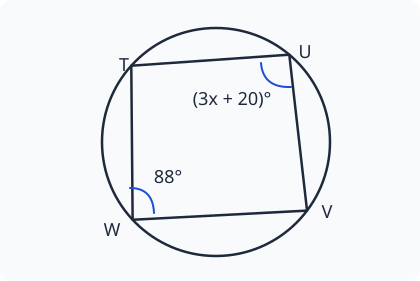
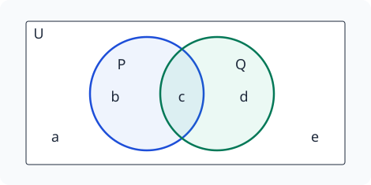
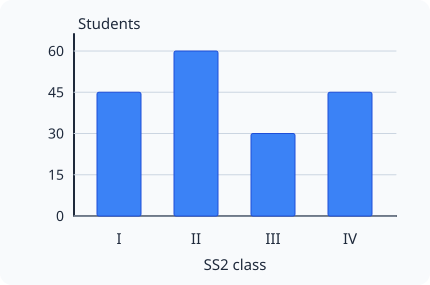
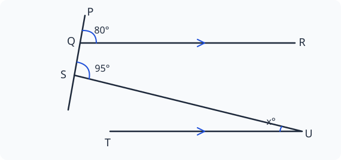
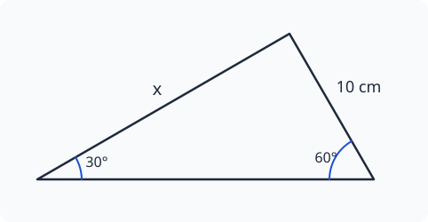
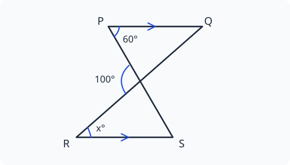
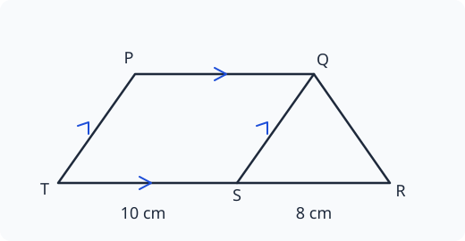
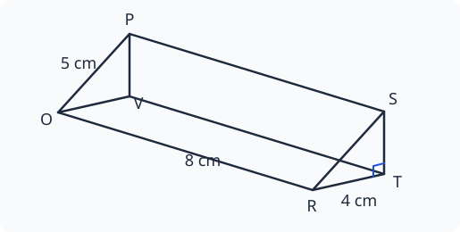
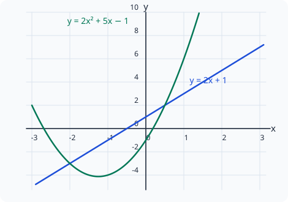
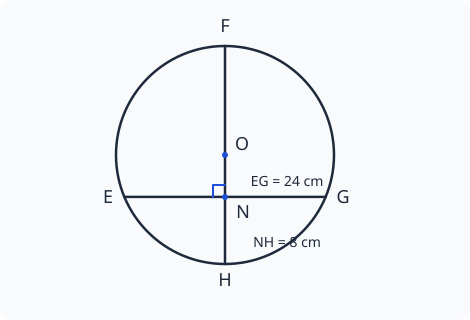

100 verified JAMB Mathematics questions
Ten questions per year, 2010–2019. The source register lists the original question and key locations. Teacher review pending.
2010
math-jamb-2010-022 · JAMB 2010 Q22 · PDF p. 5 · Ch. 8 · Nth term
The third and seventh terms of an arithmetic progression are −9 and −29. Find the tenth term.
A. 44
The terms are decreasing, so 44 has the wrong sign.
B. −165
The move from term 7 to 10 is only three steps.
C. −44
Four steps change the term by −20, so d = −5. Move three more steps from −29 to get −29 + 3(−5) = −44.
D. 165
Moving three steps from −29 still gives a negative term.
Four steps change the term by −20, so d = −5. Move three more steps from −29 to get −29 + 3(−5) = −44.
⚠ The trap
The terms are decreasing, so 44 has the wrong sign.
Remember it
Use the change per step, then move from the nearest known term.
math-jamb-2010-023 · JAMB 2010 Q23 · PDF p. 5 · Ch. 9 · Closure
The operation ∗ is defined by x ∗ y = x + y2. Evaluate (2 ∗ 3) ∗ 5.
A. 36
First 2 ∗ 3 = 2 + 9 = 11. The second operation is 11 ∗ 5 = 11 + 25 = 36.
B. 11
11 is only the inner result.
C. 25
25 is the square of the second right operand alone.
D. 55
55 would multiply 11 by 5. The rule uses addition.
First 2 ∗ 3 = 2 + 9 = 11. The second operation is 11 ∗ 5 = 11 + 25 = 36.
⚠ The trap
11 is only the inner result.
Remember it
Square the right operand each time.
math-jamb-2010-024 · JAMB 2010 Q24 · PDF p. 5 · Ch. 5 · Change of subject
The nonzero numbers p and q satisfy 18(p + q) = (18 + p)q. Which statement must hold?
A. q = 18
Expand to get 18p + 18q = 18q + pq. Cancel 18q, then divide 18p = pq by nonzero p to obtain q = 18.
B. p = 18
For p = 2 and q = 18 the equation holds, so p need not equal 18.
C. p < 1
p may be greater than 1, for instance p = 2.
D. q < 1
q is forced to equal 18.
Expand to get 18p + 18q = 18q + pq. Cancel 18q, then divide 18p = pq by nonzero p to obtain q = 18.
⚠ The trap
For p = 2 and q = 18 the equation holds, so p need not equal 18.
Remember it
Cancel equal terms before dividing by a nonzero factor.
math-jamb-2010-027 · JAMB 2010 Q27 · PDF p. 6 · Ch. 10 · Inverse
Given P = [2-311], find P−1.
A. [15351525]The lower-left entry must change from 1 to −1 before division.
B. [1535-1525]The determinant is 2 × 1 − (−3) × 1 = 5. Swap the diagonal entries, negate the off-diagonal entries, then divide each entry by 5.
C. [-1535-1525]The top-left entry comes from the original bottom-right entry, which is positive.
D. [-15-35-15-25]The top-right −3 becomes +3, and the diagonal entries stay positive.
The determinant is 2 × 1 − (−3) × 1 = 5. Swap the diagonal entries, negate the off-diagonal entries, then divide each entry by 5.
⚠ The trap
The lower-left entry must change from 1 to −1 before division.
Remember it
Swap the diagonal, flip the other signs, divide by the determinant.
math-jamb-2010-030 · JAMB 2010 Q30 · PDF p. 6 · Ch. 11 · Circle theorems
In the cyclic quadrilateral TUVW shown, find x.

Cyclic quadrilateral TUVW
A. 23°
23° makes the angle sum 177°.
B. 26°
26° makes the angle sum 186°.
C. 24°
The opposite angles at U and W sum to 180°. So (3x + 20) + 88 = 180. This gives 3x = 72 and x = 24°.
D. 20°
20° gives 168° for the pair.
The opposite angles at U and W sum to 180°. So (3x + 20) + 88 = 180. This gives 3x = 72 and x = 24°.
⚠ The trap
23° makes the angle sum 177°.
Remember it
Opposite angles in a cyclic quadrilateral add to 180°.
math-jamb-2010-035 · JAMB 2010 Q35 · PDF p. 7 · Ch. 14 · Straight line
Find the distance between (12, 12) and (−12, −12).
A. √2The horizontal and vertical changes each have magnitude 1. The distance is √12+12 = √2.
B. 0
The two points differ in both coordinates.
C. 1
1 is one coordinate difference, rather than the diagonal.
D. √3The sum of squared differences is 2.
The horizontal and vertical changes each have magnitude 1. The distance is √12+12 = √2.
⚠ The trap
The two points differ in both coordinates.
Remember it
Square both changes, add, then take the square root.
math-jamb-2010-038 · JAMB 2010 Q38 · PDF p. 8 · Ch. 15 · Ratios
For an acute angle θ, cot θ = 815. Find sin θ.
A. 131515 is the opposite side, not the hypotenuse.
B. 1517Cotangent is adjacent over opposite. Take those lengths as 8 and 15, so the hypotenuse is 17. Sine is opposite over hypotenuse, giving 1517.
C. 817817 is the cosine of θ.
D. 1617The opposite side is 15 units, not 16.
Cotangent is adjacent over opposite. Take those lengths as 8 and 15, so the hypotenuse is 17. Sine is opposite over hypotenuse, giving 1517.
⚠ The trap
817 is the cosine of θ.
Remember it
Sine uses the opposite side over the hypotenuse.
math-jamb-2010-043 · JAMB 2010 Q43 · PDF p. 8 · Ch. 18 · Definite integration
Evaluate ∫02(x3 + x2) dx.
A. 2
56This omits part of the area contributed by the two terms.
B. 6
23An antiderivative is x44 + x33. Its value at 0 is 0. At 2 it is 4 + 83 = 623.
C. 4
56This is below 4 + 83.
D. 12
56This is above the result of evaluating both antiderivative terms.
An antiderivative is x44 + x33. Its value at 0 is 0. At 2 it is 4 + 83 = 623.
⚠ The trap
This omits part of the area contributed by the two terms.
Remember it
Raise each power by one and divide by the new power.
math-jamb-2010-045 · JAMB 2010 Q45 · PDF p. 9 · Ch. 19 · Representation of data
The table shows the number of students at each mark. The pass mark is 5. How many students failed?
Marks and frequencies| Mark | 2 | 3 | 4 | 5 | 6 | 7 | 8 |
|---|
| Students | 3 | 1 | 5 | 2 | 4 | 2 | 3 |
A. 7
7 misses part of the frequency below 5.
B. 2
2 is the frequency of students who scored exactly 5 and passed.
C. 6
6 leaves out the three students who scored 2.
D. 9
Marks 2, 3 and 4 are below the pass mark. Their frequencies add to 3 + 1 + 5 = 9.
Marks 2, 3 and 4 are below the pass mark. Their frequencies add to 3 + 1 + 5 = 9.
⚠ The trap
7 misses part of the frequency below 5.
Remember it
A pass mark is included among passes.
math-jamb-2010-050 · JAMB 2010 Q50 · PDF p. 10 · Ch. 23 · Probability
Three fair coins are tossed independently. What is the probability of three heads?
A. 18Each head has probability 12. Multiply the three independent probabilities to get (12)3 = 18.
B. 13Three tosses have eight possible outcomes, rather than three.
C. 16The number of outcomes is 2 × 2 × 2, rather than 2 × 3.
D. 19Each toss has two possible outcomes, not three.
Each head has probability 12. Multiply the three independent probabilities to get (12)3 = 18.
⚠ The trap
Three tosses have eight possible outcomes, rather than three.
Remember it
Multiply probabilities for independent events that all must occur.
2011
math-jamb-2011-002 · JAMB 2011 Q2 · PDF p. 11 · Ch. 1 · Conversion
If 2q35 = 778, what is the digit q?
A. 2
In decimal, 778 = 63. The other numeral is 2 × 25 + 5q + 3. Equating them gives 5q = 10, so q = 2.
B. 1
q = 1 gives a decimal value of 58.
C. 4
q = 4 gives a decimal value of 73.
D. 0
q = 0 gives a decimal value of 53.
In decimal, 778 = 63. The other numeral is 2 × 25 + 5q + 3. Equating them gives 5q = 10, so q = 2.
⚠ The trap
q = 1 gives a decimal value of 58.
Remember it
A base-five digit in the middle has weight 5.
math-jamb-2011-005 · JAMB 2011 Q5 · PDF p. 11 · Ch. 2 · Ratio
M : N : Q = 5 : 4 : 3. Find 2N-QM.
A. 2
2 would require the numerator to be 10k.
B. 3
3 would require the numerator to be 15k.
C. 1
Write M = 5k, N = 4k and Q = 3k. The numerator is 8k − 3k = 5k, equal to the denominator. The quotient is 1.
D. 4
4 would require the numerator to be 20k.
Write M = 5k, N = 4k and Q = 3k. The numerator is 8k − 3k = 5k, equal to the denominator. The quotient is 1.
⚠ The trap
2 would require the numerator to be 10k.
Remember it
A shared nonzero scale cancels from the quotient.
math-jamb-2011-009 · JAMB 2011 Q9 · PDF p. 12 · Ch. 3 · Laws of indices, logarithms and surds
Simplify (√2 + 1√3)(√2 − 1√3).
A. 7373 adds the two squared terms.
B. 53The conjugate product is a difference of squares. It is 2 − 13 = 53.
C. 52The squared reciprocal root gives a denominator of 3.
D. 32The subtraction is one third, rather than one half.
The conjugate product is a difference of squares. It is 2 − 13 = 53.
⚠ The trap
73 adds the two squared terms.
Remember it
(a + b)(a − b) = a2 − b2.
math-jamb-2011-010 · JAMB 2011 Q10 · PDF p. 12 · Ch. 4 · Venn diagrams up to three sets
Using the Venn diagram, find (P ∩ Q)′ relative to U.

Venn diagram of P and Q
A. {a, b, d, e}
Only c lies inside both circles. Its complement in U contains every listed element except c.
B. {b, d}
This drops the elements outside both circles.
C. {a, e}
This drops b and d, although neither belongs to the intersection.
D. {c}
This is the intersection before taking the complement.
Only c lies inside both circles. Its complement in U contains every listed element except c.
⚠ The trap
This is the intersection before taking the complement.
Remember it
Complement reverses membership within the universal set.
math-jamb-2011-014 · JAMB 2011 Q14 · PDF p. 13 · Ch. 5 · Factorisation
Factorise 9y2 − 16x2 completely.
A. (3y − 2x)(3y + 4x)
The x terms produce −8x2 and a cross term.
B. (3y + 4x)(3y + 4x)
Squaring the sum produces a positive 16x2.
C. (3y + 2x)(3y − 4x)
Using 2x in the first factor leaves a cross term and gives −8x2.
D. (3y − 4x)(3y + 4x)
The terms are (3y)2 and (4x)2. The factors are their difference and sum.
The terms are (3y)2 and (4x)2. The factors are their difference and sum.
⚠ The trap
The x terms produce −8x2 and a cross term.
Remember it
For a difference of squares, use equal terms with opposite signs.
math-jamb-2011-016 · JAMB 2011 Q16 · PDF p. 13 · Ch. 6 · Direct variation
x varies directly as √y. If x = 81 when y = 9, find x when y = 179.
A. 20
142014 uses a factor 34, the reciprocal of the required factor.
B. 27
27 would be the result if y were 1.
C. 2
14This is below 27 even though the new square root is above 1.
D. 36
From 81 = k × 3, k = 27. Now 179 = 169, whose square root is 43. So x = 27 × 43 = 36.
From 81 = k × 3, k = 27. Now 179 = 169, whose square root is 43. So x = 27 × 43 = 36.
⚠ The trap
2014 uses a factor 34, the reciprocal of the required factor.
Remember it
Find the constant using x divided by the square root of y.
math-jamb-2011-025 · JAMB 2011 Q25 · PDF p. 14 · Ch. 10 · Operations
Evaluate |42-123-1-113|.
A. 25
Expand along the first row. The three terms are 4(10), −2(5) and (−1)(5). Their sum is 40 − 10 − 5 = 25.
B. 45
45 would make the middle contribution positive.
C. 15
15 subtracts an extra 10 from the correct expansion.
D. 55
55 would make both subtracted contributions positive.
Expand along the first row. The three terms are 4(10), −2(5) and (−1)(5). Their sum is 40 − 10 − 5 = 25.
⚠ The trap
45 would make the middle contribution positive.
Remember it
The first-row cofactor signs are +, −, +.
math-jamb-2011-028 · JAMB 2011 Q28 · PDF p. 15 · Ch. 12 · Areas
A wire forming a circle has length 28 cm. It is reshaped into a square. What is the square’s area?
A. 56 cm
256 cm2 would require a side longer than 7 cm.
B. 49 cm
2The wire length becomes the perimeter. Each side is 28 ÷ 4 = 7 cm, so the area is 72 = 49 cm2.
C. 98 cm
298 cm2 is twice the area of the square.
D. 28 cm
228 is the perimeter in centimetres.
The wire length becomes the perimeter. Each side is 28 ÷ 4 = 7 cm, so the area is 72 = 49 cm2.
⚠ The trap
56 cm2 would require a side longer than 7 cm.
Remember it
The perimeter gives the side length before you square it.
math-jamb-2011-033 · JAMB 2011 Q33 · PDF p. 16 · Ch. 14 · Straight line
Find the equation of the line perpendicular to 2y = 5x + 4 and passing through (4, 2).
A. 5y − 2x − 18 = 0
The slope is positive here.
B. 5y + 2x − 18 = 0
The given slope is 52, so the perpendicular slope is −25. Through (4, 2), y − 2 = −25(x − 4), or 5y + 2x − 18 = 0.
C. 5y − 2x + 18 = 0
This has the wrong slope and misses the given point.
D. 5y + 2x − 2 = 0
The slope is correct, but (4, 2) makes the left side 16.
The given slope is 52, so the perpendicular slope is −25. Through (4, 2), y − 2 = −25(x − 4), or 5y + 2x − 18 = 0.
⚠ The trap
The slope is positive here.
Remember it
Perpendicular nonvertical slopes multiply to −1.
math-jamb-2011-042 · JAMB 2011 Q42 · PDF p. 17 · Ch. 19 · Representation of data
The bar chart shows the numbers of students in four SS2 classes. How many students are there in total?

SS2 classes and student counts
A. 180
The four bars show 45, 60, 30 and 45. Their sum is 180.
B. 135
135 omits a class of 45.
C. 210
210 counts the 30-student class twice.
D. 105
105 counts only the first two classes.
The four bars show 45, 60, 30 and 45. Their sum is 180.
⚠ The trap
135 omits a class of 45.
Remember it
Total frequency is the sum of the bars.
2012
math-jamb-2012-005 · JAMB 2012 Q5 · PDF p. 20 · Ch. 2 · Percentages
A man earns ₦3,500 a month. He spends 15% on education and ₦1,950 on food. How much is left?
A. ₦525
₦525 is the education expense.
B. ₦1,025
Education costs 15% of ₦3,500, which is ₦525. Subtract ₦525 and ₦1,950 from ₦3,500 to get ₦1,025.
C. ₦1,950
₦1,950 is the food expense.
D. ₦2,975
₦2,975 is what remains before paying for food.
Education costs 15% of ₦3,500, which is ₦525. Subtract ₦525 and ₦1,950 from ₦3,500 to get ₦1,025.
⚠ The trap
₦525 is the education expense.
Remember it
Subtract both expenses from income.
math-jamb-2012-006 · JAMB 2012 Q6 · PDF p. 20 · Ch. 3 · Equations
If 27x+2 ÷ 9x+1 = 32x, find x.
A. 3
3 gives exponents 7 and 6.
B. 4
Rewrite the bases as 33 and 32. Subtracting the denominator exponent gives 3x + 6 − (2x + 2) = x + 4. Hence x + 4 = 2x and x = 4.
C. 5
5 gives exponents 9 and 10.
D. 6
6 gives exponents 10 and 12.
Rewrite the bases as 33 and 32. Subtracting the denominator exponent gives 3x + 6 − (2x + 2) = x + 4. Hence x + 4 = 2x and x = 4.
⚠ The trap
3 gives exponents 7 and 6.
Remember it
For equal powers of the same base, equate the exponents.
math-jamb-2012-009 · JAMB 2012 Q9 · PDF p. 21 · Ch. 4 · Set operations
P is the set of prime factors of 30. Q is the set of positive factors of 18 below 10. Find P ∩ Q.
A. {3}
2 also divides both 30 and 18.
B. {2, 3}
P = {2, 3, 5} and Q = {1, 2, 3, 6, 9}. The common elements are 2 and 3.
C. {2, 3, 5}
5 does not divide 18.
D. {1, 2}
1 is not prime, while 3 belongs to both sets.
P = {2, 3, 5} and Q = {1, 2, 3, 6, 9}. The common elements are 2 and 3.
⚠ The trap
2 also divides both 30 and 18.
Remember it
Intersection keeps only members in both sets.
math-jamb-2012-019 · JAMB 2012 Q19 · PDF p. 22–23 · Ch. 8 · Nth term
The nth term is n2 − 6n − 4. Find the sum of the third and fourth terms.
A. 24
Both individual terms are negative.
B. 23
Adding two negative terms cannot produce 23.
C. −24
The third term is −13 rather than −12.
D. −25
At n = 3 the term is −13. At n = 4 it is −12. Adding gives −25.
At n = 3 the term is −13. At n = 4 it is −12. Adding gives −25.
⚠ The trap
Both individual terms are negative.
Remember it
A term formula uses the position as its input.
math-jamb-2012-024 · JAMB 2012 Q24 · PDF p. 23 · Ch. 10 · Operations
I3 is the 3 × 3 identity matrix. Find its determinant.
A. −1
No minus sign is introduced by the main-diagonal product.
B. 0
The zeros are off the main diagonal and do not make the determinant zero.
C. 1
The identity matrix is diagonal with three 1s. Its determinant is the product 1 × 1 × 1 = 1.
D. 2
Each of the three factors is 1, so the product stays 1.
The identity matrix is diagonal with three 1s. Its determinant is the product 1 × 1 × 1 = 1.
⚠ The trap
No minus sign is introduced by the main-diagonal product.
Remember it
Multiply the diagonal entries of a triangular matrix.
math-jamb-2012-025 · JAMB 2012 Q25 · PDF p. 23–24 · Ch. 11 · Angles
In the diagram QR is parallel to TU, ∠PQR = 80° and ∠PSU = 95°. Find ∠SUT.

Two parallel lines and the transversal
A. 15°
The ray SP makes an angle of 80° with a rightward horizontal through S. SU lies 95° clockwise from SP, so it is 15° below that horizontal. At U the angle with UT is 15°.
B. 25°
25° would give a total of 105° at S.
C. 30°
30° would give a total of 110° at S.
D. 80°
80° is the angle between the slanted line through P and the horizontal.
The ray SP makes an angle of 80° with a rightward horizontal through S. SU lies 95° clockwise from SP, so it is 15° below that horizontal. At U the angle with UT is 15°.
⚠ The trap
25° would give a total of 105° at S.
Remember it
Parallel lines keep the same inclinations.
math-jamb-2012-029 · JAMB 2012 Q29 · PDF p. 24 · Ch. 12 · Areas
Find the area of a sector of radius 12 cm and central angle 150°.
A. 30π cm
230π is half of the required sector area.
B. 60π cm
2The sector occupies 150360 = 512 of the circle. Multiply by 144π to get 60π cm2.
C. 120π cm
2120π corresponds to a 300° sector.
D. 150π cm
2150π treats the angle as the area coefficient and even exceeds the full circle.
The sector occupies 150360 = 512 of the circle. Multiply by 144π to get 60π cm2.
⚠ The trap
30π is half of the required sector area.
Remember it
Sector area is the angle fraction times πr2.
math-jamb-2012-035 · JAMB 2012 Q35 · PDF p. 25 · Ch. 15 · Ratios
Find cos θ when θ = 135°.
A. 12Both the sign and the reference value are wrong.
B. √22This is the cosine of 45°, with the wrong sign for 135°.
C. −
√22The reference angle is 45°. Cosine is negative in quadrant II, giving −√22.
D. −
12The magnitude 12 is associated with a 60° reference angle.
The reference angle is 45°. Cosine is negative in quadrant II, giving −√22.
⚠ The trap
This is the cosine of 45°, with the wrong sign for 135°.
Remember it
Reference angle sets the magnitude. Quadrant sets the sign.
math-jamb-2012-043 · JAMB 2012 Q43 · PDF p. 27 · Ch. 20 · Measures of location
The mean of seven numbers is 96. After adding an eighth number the mean is 112. Find the eighth number.
A. 126
126 would make the new total 798.
B. 180
180 would make the new total 852.
C. 216
216 would give a mean of 111.
D. 224
The original sum is 7 × 96 = 672. The new sum is 8 × 112 = 896. Their difference is 224.
The original sum is 7 × 96 = 672. The new sum is 8 × 112 = 896. Their difference is 224.
⚠ The trap
126 would make the new total 798.
Remember it
Added value equals new total minus old total.
math-jamb-2012-048 · JAMB 2012 Q48 · PDF p. 28 · Ch. 22 · Permutation
How many distinct arrangements can be made from all the letters in TOTALITY?
A. 6720
There are eight letters with three identical Ts. Divide 8! by 3! to get 6720 distinct arrangements.
B. 6270
This is not the quotient of 40,320 by 6.
C. 6207
Three Ts require division by 6, giving a result divisible by 10 here.
D. 6027
This is below the exact quotient of 8! and 3!.
There are eight letters with three identical Ts. Divide 8! by 3! to get 6720 distinct arrangements.
⚠ The trap
This is not the quotient of 40,320 by 6.
Remember it
Divide the total factorial by the factorial for each repeated letter.
2013
math-jamb-2013-002 · JAMB 2013 Q2 · PDF p. 29 · Ch. 1 · Conversion
Express 2710 in base 3.
B. 1000
3Since 27 = 33, the base-three numeral has a single 1 in the 33 position and three zeros.
Since 27 = 33, the base-three numeral has a single 1 in the 33 position and three zeros.
⚠ The trap
11003 is 27 + 9.
Remember it
A single power of the base becomes 1 followed by zeros.
math-jamb-2013-003 · JAMB 2013 Q3 · PDF p. 29 · Ch. 2 · Ratio
Three shares are in the ratio 5 : 3 : 2. The largest share is 40 apples. How many apples are in the smallest share?
A. 16
Five parts contain 40 apples, so each part contains 8. The smallest share has two parts, or 16 apples.
B. 38
38 subtracts the ratio number from the largest share instead of scaling.
C. 36
36 is not two groups of 8.
D. 24
24 is the middle share, which has three parts.
Five parts contain 40 apples, so each part contains 8. The smallest share has two parts, or 16 apples.
⚠ The trap
38 subtracts the ratio number from the largest share instead of scaling.
Remember it
Divide by the known parts, then multiply by the requested parts.
math-jamb-2013-005 · JAMB 2013 Q5 · PDF p. 29 · Ch. 2 · Simple interest
How long will ₦3,000 take to earn ₦600 at 8% simple interest per year?
A. 3
12 years
This term earns ₦840.
B. 1
12 years
This term earns ₦360.
C. 2
12 years
Each year earns ₦3,000 × 8100 = ₦240. The time is 600240 = 212 years.
D. 3 years
Three years earns ₦720.
Each year earns ₦3,000 × 8100 = ₦240. The time is 600240 = 212 years.
⚠ The trap
This term earns ₦840.
Remember it
Time equals required interest divided by annual simple interest.
math-jamb-2013-014 · JAMB 2013 Q14 · PDF p. 30–31 · Ch. 6 · Joint variation
p varies jointly as m and u and inversely as q. When (m, u, q) = (3, 2, 1), p = 4. Find p when (m, u, q) = (6, 4, 85).
A. 10
Write p = kmuq. The first data give k = 23. The new numerator is 16, so p = 16 ÷ 85 = 10.
B. 2885This value is too large after increasing the denominator to 85.
C. 12851285 multiplies 16 by q rather than dividing.
D. 15
15 would require dividing 16 by a smaller value than the given q.
Write p = kmuq. The first data give k = 23. The new numerator is 16, so p = 16 ÷ 85 = 10.
⚠ The trap
This value is too large after increasing the denominator to 85.
Remember it
Joint variation multiplies; inverse variation divides.
math-jamb-2013-021 · JAMB 2013 Q21 · PDF p. 32 · Ch. 9 · Closure
Define x ∗ y = x + 2y. Find 2 ∗ (3 ∗ 4).
A. 14
14 omits part of the repeated operation.
B. 26
26 doubles too much. Keep the outer 2 as it is.
C. 24
The inner result is 3 + 2 × 4 = 11. The outer operation gives 2 + 2 × 11 = 24.
D. 16
16 does not double the full inner result.
The inner result is 3 + 2 × 4 = 11. The outer operation gives 2 + 2 × 11 = 24.
⚠ The trap
14 omits part of the repeated operation.
Remember it
Double the second input on every use of the rule.
math-jamb-2013-027 · JAMB 2013 Q27 · PDF p. 33 · Ch. 12 · Areas
How many 30 cm square tiles cover a rectangular floor measuring 7.2 m by 4.2 m?
A. 720
This exceeds the 24 by 14 layout.
B. 336
A tile side is 0.3 m. Along the two floor edges fit 24 and 14 tiles. The total is 24 × 14 = 336.
C. 420
420 would require more than 14 rows of 24.
D. 576
576 uses 24 × 24 and treats the floor as square.
A tile side is 0.3 m. Along the two floor edges fit 24 and 14 tiles. The total is 24 × 14 = 336.
⚠ The trap
This exceeds the 24 by 14 layout.
Remember it
Multiply rows by tiles per row.
math-jamb-2013-028 · JAMB 2013 Q28 · PDF p. 33 · Ch. 11 · Circle theorems
A chord subtends 90° at the centre of a circle with radius 8 cm. How long is the chord?
A. 8
√3 cm
Squaring this gives 192 rather than 128.
B. 4 cm
The chord is the hypotenuse, longer than either radius.
C. 8 cm
8 cm is the length of one leg, not the hypotenuse.
D. 8
√2 cm
The two radii to the chord’s ends are perpendicular. The chord is the hypotenuse of an 8 cm by 8 cm right triangle, giving √128 = 8√2 cm.
The two radii to the chord’s ends are perpendicular. The chord is the hypotenuse of an 8 cm by 8 cm right triangle, giving √128 = 8√2 cm.
⚠ The trap
Squaring this gives 192 rather than 128.
Remember it
A 90° central angle puts the chord opposite the right angle.
math-jamb-2013-037 · JAMB 2013 Q37 · PDF p. 34 · Ch. 17 · Rate of change
A circle’s radius increases at 0.02 cm s−1. At radius 7 cm, how fast is its area increasing?
A. 0.35 cm
2 s
−1This is below 0.28π.
B. 0.88 cm
2 s
−1Since A = πr2, the chain rule gives dAdt = 2πrdrdt. Put in 7 and 0.02 to get 0.28π, or about 0.88 cm2 s−1.
C. 0.75 cm
2 s
−1Using the given radius and radial growth rate gives about 0.88.
D. 0.55 cm
2 s
−1This would require a smaller radial growth rate than 0.02 at radius 7.
Since A = πr2, the chain rule gives dAdt = 2πrdrdt. Put in 7 and 0.02 to get 0.28π, or about 0.88 cm2 s−1.
⚠ The trap
This is below 0.28π.
Remember it
Multiply the circumference by the radial growth rate.
math-jamb-2013-042 · JAMB 2013 Q42 · PDF p. 35 · Ch. 20 · Measures of location
Find the mean of t + 2, 2t − 4, 3t + 2 and 2t.
A. 2t + 1
The constants cancel, so the mean has no added 1.
B. t
The combined coefficient is 8, which becomes 2 after division by 4.
C. t + 1
The t coefficient is too small and there is no constant left over.
D. 2t
The coefficients of t sum to 8. The constants sum to zero. The mean is 8t4 = 2t.
The coefficients of t sum to 8. The constants sum to zero. The mean is 8t4 = 2t.
⚠ The trap
The constants cancel, so the mean has no added 1.
Remember it
Add all the terms before dividing by the count.
math-jamb-2013-048 · JAMB 2013 Q48 · PDF p. 36–37 · Ch. 22 · Permutation
Five people are available to fill three distinct seats. How many seating arrangements are possible?
A. 5
Five accounts for just the first seat.
B. 120
120 arranges all five people in five places.
C. 60
There are 5 choices for the first seat, 4 for the second and 3 for the third. Multiply to get 60.
D. 20
20 fills only the first two seats.
There are 5 choices for the first seat, 4 for the second and 3 for the third. Multiply to get 60.
⚠ The trap
20 fills only the first two seats.
Remember it
For successive seats, multiply the remaining choices.
2014
math-jamb-2014-003 · JAMB 2014 Q3 · PDF p. 38 · Ch. 2 · Profit and loss
A grinder bought for ₦60,000 is sold at a 15% loss. Find its selling price.
A. ₦50,000
This subtracts ₦10,000, more than a 15% loss.
B. ₦53,000
This subtracts only ₦7,000.
C. ₦52,000
This subtracts ₦8,000 rather than ₦9,000.
D. ₦51,000
The loss is 0.15 × ₦60,000 = ₦9,000. Subtract it to get ₦51,000.
The loss is 0.15 × ₦60,000 = ₦9,000. Subtract it to get ₦51,000.
⚠ The trap
This subtracts ₦10,000, more than a 15% loss.
Remember it
Selling at a 15% loss means keeping 85% of cost.
math-jamb-2014-006 · JAMB 2014 Q6 · PDF p. 38 · Ch. 3 · Laws of indices, logarithms and surds
Given log10 7.5 = 0.8751, evaluate 2 log10 75 + log10 750.
A. 66.253
The result lies between 6 and 7.
B. 6.6252
The four-decimal data add to 6.6253.
C. 6.6253
Multiplying 7.5 by 10 adds 1 to its logarithm. Multiplying it by 100 adds 2. Thus the expression is 2(1.8751) + 2.8751 = 6.6253.
D. 66.252
This is roughly ten times the log sum.
Multiplying 7.5 by 10 adds 1 to its logarithm. Multiplying it by 100 adds 2. Thus the expression is 2(1.8751) + 2.8751 = 6.6253.
⚠ The trap
The result lies between 6 and 7.
Remember it
Multiplying a number by 10 adds 1 to its base-ten logarithm.
math-jamb-2014-013 · JAMB 2014 Q13 · PDF p. 39–40 · Ch. 5 · Factorisation
Factorise 2y2 − 15xy + 18x2.
A. (3y + 2x)(y − 6x)
The leading term would be 3y2.
B. (2y − 3x)(y + 6x)
Opposite signs give a negative constant term in x2.
C. (2y − 3x)(y − 6x)
Split −15xy as −12xy − 3xy. Group to get 2y(y − 6x) − 3x(y − 6x), giving (2y − 3x)(y − 6x).
D. (2y + 3x)(y − 6x)
The product of the x terms is −18x2.
Split −15xy as −12xy − 3xy. Group to get 2y(y − 6x) − 3x(y − 6x), giving (2y − 3x)(y − 6x).
⚠ The trap
The leading term would be 3y2.
Remember it
Always multiply the factors back to check the middle term.
math-jamb-2014-015 · JAMB 2014 Q15 · PDF p. 40 · Ch. 6 · Direct variation
y varies directly as w2. If y = 8 at w = 2, find y at w = 3.
A. 6
6 decreases even though w has increased.
B. 18
The constant in y = kw2 is 84 = 2. At w = 3, y = 2 × 9 = 18.
C. 12
12 scales by 32 without squaring.
D. 9
9 is w2 before multiplying by k = 2.
The constant in y = kw2 is 84 = 2. At w = 3, y = 2 × 9 = 18.
⚠ The trap
6 decreases even though w has increased.
Remember it
If w scales by a factor, y scales by its square.
math-jamb-2014-017 · JAMB 2014 Q17 · PDF p. 40 · Ch. 7 · Quadratic inequalities
Solve x−5x+3 < −1.
A. x < −3 or x > 5
To the left of −3, both factors are negative, making the quotient positive.
B. −3 < x < 1
Move −1 to the left to get 2(x−1)x+3 < 0. The numerator and denominator have opposite signs precisely on −3 < x < 1. Exclude the zero and the undefined point.
C. x < −3 or x > 1
Outside the two critical points the signs match.
D. −3 < x < 5
The upper critical point after rearrangement is 1, rather than 5.
Move −1 to the left to get 2(x−1)x+3 < 0. The numerator and denominator have opposite signs precisely on −3 < x < 1. Exclude the zero and the undefined point.
⚠ The trap
To the left of −3, both factors are negative, making the quotient positive.
Remember it
A quotient is negative when its two signs differ.
math-jamb-2014-028 · JAMB 2014 Q28 · PDF p. 42 · Ch. 15 · Sine and cosine rules
Find the length x in the triangle shown.

Triangle with two marked angles
A. 4
√3 cm
This is shorter than the side opposite 30°, though x faces the larger angle.
B. 120
√3 cm
The scale factor is √3, well below 12.
C. 10
√3 cm
The side x lies opposite 60°, and 10 cm lies opposite 30°. The sine rule gives xsin 60° = 10sin 30°, so x = 10√3 cm.
D. 5
√3 cm
This omits division by sin 30° = 12.
The side x lies opposite 60°, and 10 cm lies opposite 30°. The sine rule gives xsin 60° = 10sin 30°, so x = 10√3 cm.
⚠ The trap
This is shorter than the side opposite 30°, though x faces the larger angle.
Remember it
Sine rule pairs a side with its opposite angle.
math-jamb-2014-032 · JAMB 2014 Q32 · PDF p. 42–43 · Ch. 14 · Straight line
Find the midpoint of S(−5, 4) and T(−3, −2).
A. (4, −1)
The x midpoint must be between −5 and −3.
B. (−4, 2)
The y-values sum to 2, so their average is 1.
C. (4, −2)
The x midpoint cannot be positive, and y is 1.
D. (−4, 1)
Average the x-values and y-values separately. The x-value is -5-32 = −4, and the y-value is 4-22 = 1.
Average the x-values and y-values separately. The x-value is -5-32 = −4, and the y-value is 4-22 = 1.
⚠ The trap
The x midpoint must be between −5 and −3.
Remember it
Keep x-values together and y-values together.
math-jamb-2014-038 · JAMB 2014 Q38 · PDF p. 44 · Ch. 16 · First principles
For y = 4x3 − 2x2 + x, find dydx.
A. 12x
2 − 4x + 1
Differentiate each power. The first term gives 12x2, the second −4x and the third 1.
B. 8x
2 − 2x + 1
Both initial coefficients use the wrong multiplier.
C. 8x
2 − 4x + 1
The cubic contributes 4 × 3, giving 12x2.
D. 12x
2 − 2x + 1
Differentiating −2x2 gives −4x.
Differentiate each power. The first term gives 12x2, the second −4x and the third 1.
⚠ The trap
Both initial coefficients use the wrong multiplier.
Remember it
Derivative of axn is anxn−1.
math-jamb-2014-041 · JAMB 2014 Q41 · PDF p. 44 · Ch. 18 · Indefinite integration
Evaluate ∫ sin(2x) dx.
A. −cos(2x) + k
The derivative is 2 sin(2x), twice the target.
B. cos(2x) + k
The derivative is −2 sin(2x).
C. 12 cos(2x) + k
The derivative is −sin(2x), with the wrong sign.
D. −
12 cos(2x) + k
The derivative of cos(2x) is −2 sin(2x). Multiply cos(2x) by −12 to make its derivative exactly sin(2x). Add the constant k.
The derivative of cos(2x) is −2 sin(2x). Multiply cos(2x) by −12 to make its derivative exactly sin(2x). Add the constant k.
⚠ The trap
The derivative is 2 sin(2x), twice the target.
Remember it
To integrate sin(ax), divide −cos(ax) by a.
math-jamb-2014-049 · JAMB 2014 Q49 · PDF p. 45–46 · Ch. 23 · Probability
A die was thrown 100 times, with the recorded counts shown. What is the relative-frequency estimate for a roll of at least 4?
Recorded outcomes from 100 die rolls| Face | 1 | 2 | 3 | 4 | 5 | 6 |
|---|
| Frequency | 18 | 22 | 20 | 16 | 10 | 14 |
A. 34The three qualifying columns contain 40, not 75.
B. 15This counts only 20 out of 100 outcomes.
C. 12Half is the theoretical result for a fair die, which differs from the observed result here.
D. 25The qualifying faces are 4, 5 and 6. Their total frequency is 16 + 10 + 14 = 40, so the estimate is 40100 = 25.
The qualifying faces are 4, 5 and 6. Their total frequency is 16 + 10 + 14 = 40, so the estimate is 40100 = 25.
⚠ The trap
Half is the theoretical result for a fair die, which differs from the observed result here.
Remember it
An experimental probability uses observed counts.
2015
math-jamb-2015-002 · JAMB 2015 Q2 · PDF p. 47 · Ch. 3 · Laws of indices, logarithms and surds
Which of the following numbers squares to 170 − 20√30?
A. 2
√10 − 5
This has rational part 65 after squaring.
B. 3
√5 − 8
√6This has rational part 429 after squaring.
C. 2
√5 − 5
√6For the third option the individual squares are 20 and 150, and the cross term is −20√30. Their sum equals the required expression.
D. 5
√5 − 2
√6This has rational part 149 rather than 170.
For the third option the individual squares are 20 and 150, and the cross term is −20√30. Their sum equals the required expression.
⚠ The trap
This has rational part 65 after squaring.
Remember it
Either sign of a number has the same square.
math-jamb-2015-006 · JAMB 2015 Q6 · PDF p. 47–48 · Ch. 11 · Angles
In the diagram PQ is parallel to RS. Find x.

Parallel lines PQ and RS
A. 20°
20° would make the upper triangle total 160°.
B. 40°
The adjacent angle at the crossing is 180° − 100° = 80°. The upper triangle leaves 180° − 60° − 80° = 40° at Q. Alternate interior angles give x = 40° at R.
C. 60°
60° is the marked angle at P, on the other transversal.
D. 80°
80° is at the crossing in the upper triangle.
The adjacent angle at the crossing is 180° − 100° = 80°. The upper triangle leaves 180° − 60° − 80° = 40° at Q. Alternate interior angles give x = 40° at R.
⚠ The trap
20° would make the upper triangle total 160°.
Remember it
A straight line gives 180°, and alternate interior angles agree.
math-jamb-2015-008 · JAMB 2015 Q8 · PDF p. 48 · Ch. 2 · Percentages
A salary increases by 15% to ₦345 per month. Find the original monthly salary.
A. ₦350
The original must be lower than the new salary.
B. ₦396.75
This applies another 15% increase to the new salary.
C. ₦300
The new salary is 115% of the original. Divide ₦345 by 1.15 to get ₦300.
D. ₦293.25
This subtracts 15% of the new amount, which uses the wrong base.
The new salary is 115% of the original. Divide ₦345 by 1.15 to get ₦300.
⚠ The trap
This subtracts 15% of the new amount, which uses the wrong base.
Remember it
Reverse a percentage increase by dividing by the growth factor.
math-jamb-2015-014 · JAMB 2015 Q14 · PDF p. 49 · Ch. 1 · Conversion
Write 3910 in base 2.
A. 100111
239 = 32 + 4 + 2 + 1. From the 32 place through the units place, the digits are 100111.
B. 110111
21101112 equals 55.
C. 111001
21110012 equals 57.
D. 100101
21001012 equals 37.
39 = 32 + 4 + 2 + 1. From the 32 place through the units place, the digits are 100111.
⚠ The trap
1101112 equals 55.
Remember it
Read the bit positions from the largest power down to the units.
math-jamb-2015-015 · JAMB 2015 Q15 · PDF p. 49 · Ch. 11 · Polygons
Four interior angles of a pentagon are equal. The fifth is 60°. Find each of the four equal angles.
A. 60°
60° is only the fifth angle.
B. 108°
108° would apply to a regular pentagon.
C. 120°
A pentagon’s interior angles total 540°. Removing 60° leaves 480° for the equal angles, so each is 120°.
D. 150°
Four angles of 150° plus 60° exceed the total.
A pentagon’s interior angles total 540°. Removing 60° leaves 480° for the equal angles, so each is 120°.
⚠ The trap
60° is only the fifth angle.
Remember it
An n-sided polygon has angle sum (n − 2) × 180°.
math-jamb-2015-022 · JAMB 2015 Q22 · PDF p. 50 · Ch. 12 · Areas
A sector has radius 7 cm and arc length 6 cm. Find its area.
A. 42 cm
242 omits the factor of one half.
B. 3 cm
23 halves the arc but leaves out the radius.
C. 21 cm
2If the central angle in radians is θ, the arc is rθ and the area is r2θ2. So the area is half the product of radius and arc, or 21 cm2.
D. 24 cm
224 would require an 8 cm radius with this arc length.
If the central angle in radians is θ, the arc is rθ and the area is r2θ2. So the area is half the product of radius and arc, or 21 cm2.
⚠ The trap
42 omits the factor of one half.
Remember it
Sector area is 12 × radius × arc length.
math-jamb-2015-024 · JAMB 2015 Q24 · PDF p. 51 · Ch. 20 · Measures of location
The mean age of 30 pupils falls from 15.3 to 15.2 years when one boy is replaced by one girl. How much older is the boy?
A. 30 years
30 uses the number of pupils without the 0.1-year change.
B. 6 years
6 doubles the change in the class total.
C. 9 years
9 would reduce the mean by 0.3 years.
D. 3 years
The class size stays 30, so the drop in total age is 30 × (15.3 − 15.2) = 3 years. Only the two pupils differ between totals.
The class size stays 30, so the drop in total age is 30 × (15.3 − 15.2) = 3 years. Only the two pupils differ between totals.
⚠ The trap
30 uses the number of pupils without the 0.1-year change.
Remember it
When count stays fixed, total change is count times mean change.
math-jamb-2015-032 · JAMB 2015 Q32 · PDF p. 52 · Ch. 15 · Elevation and depression
The angle of elevation to the top of a 40 m building is 30°. The instrument is at ground level. Find its horizontal distance from the building.
A. 20√3 m
This is too short even for a 45° elevation with a 40 m height.
B. 40√3 m
This multiplies by the tangent instead of dividing.
C. 20
√3 m
This is half of the required horizontal distance.
D. 40
√3 m
Tangent is height divided by horizontal distance. Hence the distance is 40tan 30° = 40√3 m.
Tangent is height divided by horizontal distance. Hence the distance is 40tan 30° = 40√3 m.
⚠ The trap
This is too short even for a 45° elevation with a 40 m height.
Remember it
Distance equals height divided by tangent.
math-jamb-2015-034 · JAMB 2015 Q34 · PDF p. 53 · Ch. 16 · Chain rule
Differentiate cos(3x2 − 2x) with respect to x.
A. −sin(6x − 2)
The sine argument must remain 3x2 − 2x.
B. −sin(3x
2 − 2x)
This leaves out the factor 6x − 2.
C. (6x − 2) sin(3x
2 − 2x)
The derivative of cosine introduces a minus sign.
D. −(6x − 2) sin(3x
2 − 2x)
The derivative of the outer cosine is minus sine evaluated at the same inner expression. Multiply by the derivative 6x − 2 of that inner expression.
The derivative of the outer cosine is minus sine evaluated at the same inner expression. Multiply by the derivative 6x − 2 of that inner expression.
⚠ The trap
The sine argument must remain 3x2 − 2x.
Remember it
Differentiate outside, keep inside, then multiply by the inside derivative.
math-jamb-2015-035 · JAMB 2015 Q35 · PDF p. 53 · Ch. 3 · Laws of indices, logarithms and surds
Given x = log8 10, express log8 5 in terms of x.
A. x2Halving a logarithm corresponds to taking a square root of the argument.
B. x −
14A fourth power of 2 is 16, rather than 8.
C. x −
13Since 5 = 10 ÷ 2, subtract log8 2 from x. As 8 = 23, log8 2 = 13.
D. x −
12A square of 2 is 4, rather than 8.
Since 5 = 10 ÷ 2, subtract log8 2 from x. As 8 = 23, log8 2 = 13.
⚠ The trap
Halving a logarithm corresponds to taking a square root of the argument.
Remember it
Dividing the argument subtracts a logarithm.
2016
math-jamb-2016-002 · JAMB 2016 Q2 · PDF p. 55 · Ch. 5 · Factorisation
For which p does x2 − (p−2)x + 2p + 1 = 0 have equal roots?
A. (0, 12)
Equal roots require a zero discriminant. Expanding (p−2)2 − 4(2p+1) gives p2 − 12p = p(p−12). So p is 0 or 12.
B. (1, 2)
Neither 1 nor 2 zeros p(p−12).
C. (21, 0)
0 works, but 21 does not.
D. (4, 5)
Neither 4 nor 5 zeros the discriminant.
Equal roots require a zero discriminant. Expanding (p−2)2 − 4(2p+1) gives p2 − 12p = p(p−12). So p is 0 or 12.
⚠ The trap
Neither 1 nor 2 zeros p(p−12).
Remember it
A zero discriminant gives equal quadratic roots.
math-jamb-2016-008 · JAMB 2016 Q8 · PDF p. 56 · Ch. 23 · Probability
A crate contains 10 Coca-Cola, 8 Fanta and 6 Sprite bottles. One bottle is chosen uniformly at random. What is the probability it is not Coca-Cola?
A. 512This is the probability of Coca-Cola.
B. 13This counts only the Fanta bottles.
C. 34This would require 18 eligible bottles.
D. 712There are 24 bottles and 14 are Fanta or Sprite. The probability is 1424 = 712.
There are 24 bottles and 14 are Fanta or Sprite. The probability is 1424 = 712.
⚠ The trap
This is the probability of Coca-Cola.
Remember it
The complement probability is one minus the event probability.
math-jamb-2016-010 · JAMB 2016 Q10 · PDF p. 56 · Ch. 16 · Chain rule
Differentiate (cos q − sin q)2 with respect to q.
A. −2 cos 2q
Expand the square to get 1 − 2 sin q cos q = 1 − sin 2q. Differentiating gives −2 cos 2q.
B. −2 sin 2q
Differentiation changes sine to cosine.
C. 1 − 2 cos 2q
The derivative of the constant 1 is zero.
D. 1 − 2 sin 2q
This keeps the constant and retains sine after differentiation.
Expand the square to get 1 − 2 sin q cos q = 1 − sin 2q. Differentiating gives −2 cos 2q.
⚠ The trap
Differentiation changes sine to cosine.
Remember it
The derivative of sin 2q includes a factor of 2.
math-jamb-2016-013 · JAMB 2016 Q13 · PDF p. 57 · Ch. 7 · Quadratic inequalities
For which real x is x2 − x − 12 ≥ 0?
A. x < −2 or x > 4
This puts the left boundary in the wrong place and excludes x = 4.
B. x ≤ −3 or x ≥ 4
The quadratic is (x−4)(x+3). It is positive outside the roots and zero at −3 and 4. Include both endpoints.
C. −3 < x ≤ 4
The quadratic is negative for x = 0, inside this interval.
D. −3 ≤ x ≤ 4
The endpoints work, but interior points such as 0 do not.
The quadratic is (x−4)(x+3). It is positive outside the roots and zero at −3 and 4. Include both endpoints.
⚠ The trap
This puts the left boundary in the wrong place and excludes x = 4.
Remember it
An upward quadratic is nonnegative outside its roots, including the roots.
math-jamb-2016-014 · JAMB 2016 Q14 · PDF p. 57 · Ch. 2 · Profit and loss
A photocopier costs ₦34,000 and servicing costs ₦2,000. The machine is sold for a 15% profit on total cost. Find the selling price.
A. ₦37,550
This leaves a profit of only ₦1,550.
B. ₦40,400
This leaves ₦4,400 rather than ₦5,400.
C. ₦41,400
The total cost is ₦36,000. A 15% profit adds ₦5,400, giving ₦41,400.
D. ₦42,400
This adds ₦6,400, more than 15%.
The total cost is ₦36,000. A 15% profit adds ₦5,400, giving ₦41,400.
⚠ The trap
This leaves a profit of only ₦1,550.
Remember it
Profit is based on total cost in this problem.
math-jamb-2016-015 · JAMB 2016 Q15 · PDF p. 57 · Ch. 12 · Areas
A sphere has surface area 154 cm2. Find its radius to the nearest 0.01 cm.
A. 7.00 cm
7 cm is about the diameter.
B. 3.50 cm
Use 4πr2 = 154. The radius is √1544π, approximately 3.50 cm.
C. 3.00 cm
3 cm gives area 36π, below 154.
D. 1.75 cm
1.75 cm is half the required radius.
Use 4πr2 = 154. The radius is √1544π, approximately 3.50 cm.
⚠ The trap
7 cm is about the diameter.
Remember it
After dividing by 4π, take the square root.
math-jamb-2016-016 · JAMB 2016 Q16 · PDF p. 57 · Ch. 8 · Sum
Find the sum of the first n terms of 5, 11, 17, 23, 29, 35, ….
A. n(3n − 0)
At n = 1 this gives 3 instead of 5.
B. n(3n + 2)
With first term 5 and common difference 6, the sum is n2[10 + 6(n−1)] = n(3n + 2).
C. n(3n + 2.5)
At n = 1 it gives 5.5.
D. n(3n + 5)
At n = 1 it gives 8.
With first term 5 and common difference 6, the sum is n2[10 + 6(n−1)] = n(3n + 2).
⚠ The trap
At n = 1 this gives 3 instead of 5.
Remember it
The nth-term offset is n − 1, including in the sum formula.
math-jamb-2016-018 · JAMB 2016 Q18 · PDF p. 57 · Ch. 22 · Combination
A delegation of three is chosen from five men and three women. At least one man and one woman must serve. How many delegations are possible?
A. 15
15 counts just the one-man case.
B. 28
28 does not account for both eligible group compositions.
C. 30
30 counts just the two-men case.
D. 45
Count the two cases. One man and two women give 5 × 3 = 15. Two men and one woman give 10 × 3 = 30. Add to get 45.
Count the two cases. One man and two women give 5 × 3 = 15. Two men and one woman give 10 × 3 = 30. Add to get 45.
⚠ The trap
15 counts just the one-man case.
Remember it
Multiply within a case and add disjoint cases.
math-jamb-2016-030 · JAMB 2016 Q30 · PDF p. 59–60 · Ch. 12 · Areas
In the figure, PQST is a parallelogram and T, S and R are collinear. Triangle QRS has area 20 cm2. Find the area of trapezium PQRT.

Parallelogram and adjoining triangle
A. 35 cm
235 halves the whole trapezium area.
B. 65 cm
265 does not match 50 + 20.
C. 70 cm
2Triangle QRS has base 8 cm and area 20 cm2, so its perpendicular height is 5 cm. The parallelogram shares that height and has base 10 cm, giving area 50 cm2. Add the triangle to get 70 cm2.
D. 140 cm
2140 drops the half in the trapezium formula.
Triangle QRS has base 8 cm and area 20 cm2, so its perpendicular height is 5 cm. The parallelogram shares that height and has base 10 cm, giving area 50 cm2. Add the triangle to get 70 cm2.
⚠ The trap
35 halves the whole trapezium area.
Remember it
Shapes on the same baseline and below the same parallel line share a height.
math-jamb-2016-032 · JAMB 2016 Q32 · PDF p. 60 · Ch. 18 · Indefinite integration
A curve has gradient 6x − 5 at every point and passes through (2, 5). Find its equation.
A. y = 6x
2 − 5x
Its derivative is 12x − 5.
B. y = 6x
2 + 5x + 5
Its derivative is 12x + 5.
C. y = 3x
2 − 5x − 5
It has the right derivative but gives y = −3 when x = 2.
D. y = 3x
2 − 5x + 3
Integrating the derivative gives y = 3x2 − 5x + C. At x = 2 the first two terms total 2. To make y = 5, C must be 3.
Integrating the derivative gives y = 3x2 − 5x + C. At x = 2 the first two terms total 2. To make y = 5, C must be 3.
⚠ The trap
Its derivative is 12x − 5.
Remember it
A known point determines the integration constant.
2017
math-jamb-2017-002 · JAMB 2017 Q2 · PDF p. 62 · Ch. 10 · Operations
Let P = [21-30] and let I be the 2 × 2 identity matrix. Evaluate P2 − 2P + 4I.
A. [94-121]This does not subtract 2P correctly and leaves off-diagonal entries.
B. [-300-3]This stops before adding 4I.
C. [1001]The square is [12-6-3]. Subtracting 2P gives [-300-3]. Adding 4I changes each diagonal entry to 1.
D. [1441]The off-diagonal entries cancel when 2P is subtracted.
The square is [12-6-3]. Subtracting 2P gives [-300-3]. Adding 4I changes each diagonal entry to 1.
⚠ The trap
This does not subtract 2P correctly and leaves off-diagonal entries.
Remember it
Adding a multiple of I changes only diagonal entries.
math-jamb-2017-003 · JAMB 2017 Q3 · PDF p. 62 · Ch. 14 · Straight line
The lines 2y − ax + 4 = 0 and y + x4 − 1 = 0 are perpendicular. Find a.
A. −4
A negative a makes both slopes negative.
B. 4
4 is the required slope of the first line, and a is twice that slope.
C. 8
The slopes are a2 and −14. Their product is −1, so −a8 = −1 and a = 8.
D. −8
−8 would make the product of slopes +1.
The slopes are a2 and −14. Their product is −1, so −a8 = −1 and a = 8.
⚠ The trap
A negative a makes both slopes negative.
Remember it
Take the negative reciprocal for a perpendicular slope.
math-jamb-2017-016 · JAMB 2017 Q16 · PDF p. 64 · Ch. 5 · Cubics
Which polynomial has zeros −2, −1 and 3?
A. x
3 − 7x + 6
Its constant term is +6, but the product of factor constants is −6.
B. x
3 + 7x − 6
At x = 3 this is 42 instead of zero.
C. x
3 + 7x + 6
Both the x coefficient and constant differ from the factor product.
D. x
3 − 7x − 6
The factors are (x + 2), (x + 1) and (x − 3). Their product is x3 − 7x − 6.
The factors are (x + 2), (x + 1) and (x − 3). Their product is x3 − 7x − 6.
⚠ The trap
Its constant term is +6, but the product of factor constants is −6.
Remember it
A factor has the opposite sign to its root in the constant part.
math-jamb-2017-020 · JAMB 2017 Q20 · PDF p. 65 · Ch. 23 · Probability
An integer is selected uniformly from 1 through 20. What is the probability it is divisible by both 2 and 3?
A. 120This counts one qualifying integer instead of three.
B. 13One third is not the fraction with both factors.
C. 320The least common multiple is 6. In the stated range 6, 12 and 18 qualify, so the chance is 320.
D. 720There are only three multiples of 6 up to 20.
The least common multiple is 6. In the stated range 6, 12 and 18 qualify, so the chance is 320.
⚠ The trap
This counts one qualifying integer instead of three.
Remember it
Divisible by both means divisible by their least common multiple.
math-jamb-2017-021 · JAMB 2017 Q21 · PDF p. 65–66 · Ch. 2 · Profit and loss
A trader bought goats at ₦4,000 each and sold them all for ₦180,000 at a 25% loss. How many goats did he buy?
A. 60
Each goat sells for 75% of ₦4,000, or ₦3,000. At that price ₦180,000 represents 60 goats.
B. 50
50 goats would bring ₦150,000 at the sale price.
C. 45
45 divides the sale proceeds by the cost per goat.
D. 36
36 would bring just ₦108,000 at the sale price.
Each goat sells for 75% of ₦4,000, or ₦3,000. At that price ₦180,000 represents 60 goats.
⚠ The trap
50 goats would bring ₦150,000 at the sale price.
Remember it
Total sale proceeds divided by sale price per item gives the count.
math-jamb-2017-025 · JAMB 2017 Q25 · PDF p. 66 · Ch. 10 · Operations
Find the determinant of N = [35-46-3-5-221].
A. 17
Expanding along the first row gives 3(7) − 5(−4) + (−4)(6) = 21 + 20 − 24 = 17.
B. 23
The last contribution is −24, rather than −18.
C. 65
This makes the last contribution positive.
D. 91
The signed minor products sum to 17.
Expanding along the first row gives 3(7) − 5(−4) + (−4)(6) = 21 + 20 − 24 = 17.
⚠ The trap
The last contribution is −24, rather than −18.
Remember it
First-row cofactor signs alternate +, −, +.
math-jamb-2017-027 · JAMB 2017 Q27 · PDF p. 67 · Ch. 3 · Rationalisation
Rationalise 2−√53−√5.
A. 1−√52The denominator after multiplication is 4, not 2.
B. 1−√54Multiply top and bottom by 3 + √5. The denominator becomes 9 − 5 = 4. The numerator becomes 6 + 2√5 − 3√5 − 5 = 1 − √5.
C. √5−12The original quotient is negative.
D. 1+√54The √5 terms in the numerator combine to −√5.
Multiply top and bottom by 3 + √5. The denominator becomes 9 − 5 = 4. The numerator becomes 6 + 2√5 − 3√5 − 5 = 1 − √5.
⚠ The trap
The denominator after multiplication is 4, not 2.
Remember it
Conjugates remove the radical through a difference of squares.
math-jamb-2017-031 · JAMB 2017 Q31 · PDF p. 67 · Ch. 5 · Change of subject
The graphs y = px2 + q and y = 2x2 − 1 intersect at x = 2. Express p in terms of q.
A. 7+q8Move q to the other side by subtracting it, and divide by 4.
B. 8−q2The second graph evaluates to 7, and the coefficient of p is 4.
C. q−87This subtracts in the wrong order and divides by the wrong number.
D. 7−q4At x = 2, the second graph has y = 7. The first graph has y = 4p + q. Equating them gives p = 7−q4.
At x = 2, the second graph has y = 7. The first graph has y = 4p + q. Equating them gives p = 7−q4.
⚠ The trap
Move q to the other side by subtracting it, and divide by 4.
Remember it
At an intersection, both formulas give the same y.
math-jamb-2017-035 · JAMB 2017 Q35 · PDF p. 68 · Ch. 3 · Laws of indices, logarithms and surds
Evaluate log3 27 − log14 64log3(181).
A. 74The denominator is negative and the numerator is 6.
B. −
74The numerator is 6 rather than 7.
C. −
32The three logs are 3, −3 and −4. Thus the numerator is 3 − (−3) = 6 and the quotient is −32.
D. 73Both the sign and the denominator differ from the evaluated quotient.
The three logs are 3, −3 and −4. Thus the numerator is 3 − (−3) = 6 and the quotient is −32.
⚠ The trap
The denominator is negative and the numerator is 6.
Remember it
A base between 0 and 1 can give a negative log of a number above 1.
math-jamb-2017-038 · JAMB 2017 Q38 · PDF p. 68–69 · Ch. 12 · Volumes
The figure shows a right triangular prism. Find its volume.

Right triangular prism
A. 160 cm
3This multiplies the three printed lengths without finding the triangular area.
B. 48 cm
3The triangular end has hypotenuse 5 cm and one leg 4 cm, so the other leg is 3 cm. Its area is 4×32 = 6 cm2. Multiply by the prism length 8 cm to get 48 cm3.
C. 96 cm
3This uses a rectangular end of area 12 cm².
D. 120 cm
3This does not use the area of the 3–4–5 triangle.
The triangular end has hypotenuse 5 cm and one leg 4 cm, so the other leg is 3 cm. Its area is 4×32 = 6 cm2. Multiply by the prism length 8 cm to get 48 cm3.
⚠ The trap
This multiplies the three printed lengths without finding the triangular area.
Remember it
Prism volume is end area times length.
2018
math-jamb-2018-010 · JAMB 2018 Q10 · PDF p. 71 · Ch. 2 · Ratio
The profit shares of two partners are in the ratio 4 : 5. The larger share is ₦5,000 more than the smaller. What is the total profit?
A. ₦20,000
₦20,000 is the smaller share.
B. ₦25,000
₦25,000 is the larger share.
C. ₦50,000
The total has nine parts, not ten.
D. ₦45,000
The shares differ by one ratio part, so one part is ₦5,000. The whole profit has nine parts, or ₦45,000.
The shares differ by one ratio part, so one part is ₦5,000. The whole profit has nine parts, or ₦45,000.
⚠ The trap
₦20,000 is the smaller share.
Remember it
The total combines both sets of ratio parts.
math-jamb-2018-011 · JAMB 2018 Q11 · PDF p. 71–72 · Ch. 5 · Cubics
One root of x3 − 2x2 − 5x + 6 = 0 is 1. Find the other roots.
A. −3 and 2
Neither −3 nor 2 zeros the quotient.
B. −2 and 2
−2 works, but 2 does not.
C. 3 and −2
Divide by x − 1 to get x2 − x − 6 = (x − 3)(x + 2). The remaining roots are 3 and −2.
D. 1 and 3
1 is the root already removed and is not a root of the quotient.
Divide by x − 1 to get x2 − x − 6 = (x − 3)(x + 2). The remaining roots are 3 and −2.
⚠ The trap
Neither −3 nor 2 zeros the quotient.
Remember it
After removing a known root, solve the quotient equation.
math-jamb-2018-016 · JAMB 2018 Q16 · PDF p. 72 · Ch. 2 · Approximations and significant figures
Round 59.81798 and 0.0746829 to three significant figures each. Multiply the rounded values and report the product to three significant figures.
A. 4.46
4.46 truncates the displayed product at two decimal places.
B. 4.48
The product is below 4.475, the threshold for rounding to 4.48.
C. 4.47
Round the factors to 59.8 and 0.0747. Their product is 4.46706, which rounds to 4.47.
D. 4.49
This is above the product by more than the required rounding.
Round the factors to 59.8 and 0.0747. Their product is 4.46706, which rounds to 4.47.
⚠ The trap
4.46 truncates the displayed product at two decimal places.
Remember it
Significant figures start at the first nonzero digit.
math-jamb-2018-017 · JAMB 2018 Q17 · PDF p. 73 · Ch. 11 · Polygons
One interior angle of a convex hexagon is 170°. The other five are equal. Find each of those five angles.
A. 120°
120° is the equal-angle result for a regular hexagon, which this is not.
B. 110°
The interior sum is 720°. The five equal angles total 550°, so each is 110°.
C. 105°
Five such angles plus 170° give 695°.
D. 102°
Five such angles plus 170° give 680°.
The interior sum is 720°. The five equal angles total 550°, so each is 110°.
⚠ The trap
120° is the equal-angle result for a regular hexagon, which this is not.
Remember it
An n-sided polygon’s angle sum is (n−2) × 180°.
math-jamb-2018-019 · JAMB 2018 Q19 · PDF p. 73 · Ch. 1 · Conversion
Convert 2415 to base 8.
A. 71
8718 means 57 in decimal.
B. 107
8The decimal value is 2 × 25 + 4 × 5 + 1 = 71. Since 71 = 1 × 64 + 0 × 8 + 7, the base-eight numeral is 1078.
C. 176
81768 is 126 in decimal.
D. 241
8Keeping the original digits when changing base changes the value.
The decimal value is 2 × 25 + 4 × 5 + 1 = 71. Since 71 = 1 × 64 + 0 × 8 + 7, the base-eight numeral is 1078.
⚠ The trap
718 means 57 in decimal.
Remember it
The zero is needed when the 8s place is empty.
math-jamb-2018-025 · JAMB 2018 Q25 · PDF p. 74 · Ch. 8 · Nth term
Find the eleventh term of the geometric progression 4, 8, 16, ….
A. 2
13213 is the twelfth term.
B. 2
12The first term is 22, and the common ratio is 2. Ten multiplications by 2 take it to the eleventh term, 212.
C. 2
11211 is the tenth term.
D. 2
16216 would require fourteen multiplications from 4.
The first term is 22, and the common ratio is 2. Ten multiplications by 2 take it to the eleventh term, 212.
⚠ The trap
213 is the twelfth term.
Remember it
The first term already occupies position 1.
math-jamb-2018-027 · JAMB 2018 Q27 · PDF p. 74 · Ch. 22 · Combination
In how many ways can six subjects be selected from ten subjects for an examination?
A. 218
This is higher than the exact combination count.
B. 216
The factorial quotient gives 210, not 216.
C. 215
This is five above the combination count.
D. 210
The order of the selected subjects is irrelevant, so use 10!6!4! = 210.
The order of the selected subjects is irrelevant, so use 10!6!4! = 210.
⚠ The trap
This is higher than the exact combination count.
Remember it
Use combinations when order does not matter.
math-jamb-2018-036 · JAMB 2018 Q36 · PDF p. 76 · Ch. 12 · Volumes
A hemisphere has volume 71823 cm3. Find its radius to one decimal place.
A. 4.0 cm
4 cm gives a volume near 134 cm³.
B. 5.6 cm
5.6 cm gives a volume far below 71823 cm³.
C. 7.0 cm
The volume is 2πr33. Solving gives r3 = 3V2π, which is about 343. The cube root is about 7.0 cm.
D. 3.6 cm
3.6 cm gives a volume below 100 cm³.
The volume is 2πr33. Solving gives r3 = 3V2π, which is about 343. The cube root is about 7.0 cm.
⚠ The trap
4 cm gives a volume near 134 cm³.
Remember it
Hemisphere volume is 23πr3.
math-jamb-2018-038 · JAMB 2018 Q38 · PDF p. 76 · Ch. 2 · Ratio
A recipe uses 2.5 kg of sugar for every 4.5 kg of flour. A batch uses 24.5 kg of this mixture. How much sugar is in the batch?
A. 12.25 kg
This assigns half the mixture to sugar.
B. 6.75 kg
This would require less than 2.5 kg of sugar per 7 kg.
C. 8.75 kg
In each 7 kg of mixture, 2.5 kg is sugar. So the sugar in the batch is 24.5 × 2.57 = 8.75 kg.
D. 15.75 kg
This is the amount of flour.
In each 7 kg of mixture, 2.5 kg is sugar. So the sugar in the batch is 24.5 × 2.57 = 8.75 kg.
⚠ The trap
This assigns half the mixture to sugar.
Remember it
A part-to-total fraction uses both ingredients in its denominator.
math-jamb-2018-039 · JAMB 2018 Q39 · PDF p. 76 · Ch. 2 · Ratio
Cars X and Y start together and travel 150 km. Y averages 60 km/h. X arrives 25 minutes before Y. What is X’s average speed?
A. 51
39 km/h
A speed below Y’s cannot get X there earlier.
B. 72 km/h
Y takes 2.5 hours or 150 minutes. X takes 125 minutes, or 2512 h. Thus X’s speed is 1502512 = 72 km/h.
C. 66 km/h
66 km/h would take longer than 125 minutes.
D. 37
12 km/h
This speed is well below Y’s.
Y takes 2.5 hours or 150 minutes. X takes 125 minutes, or 2512 h. Thus X’s speed is 1502512 = 72 km/h.
⚠ The trap
A speed below Y’s cannot get X there earlier.
Remember it
For the same distance, a shorter time means a higher speed.
2019
math-jamb-2019-003 · JAMB 2019 Q3 · ACADite 2019 section · Ch. 9 · Identity
For real numbers m and n, define m ∗ n = mn + m + n. Find the identity element e.
A. e = 1
At m = 0, 0 ∗ 1 = 1 rather than 0.
B. e = −1
At m = 0, this gives −1.
C. e = −2
This sends 0 to −2.
D. e = 0
The identity must satisfy m ∗ e = m for every m. Substitution gives e(m + 1) = 0 for every m, so e = 0. The rule is symmetric, and 0 ∗ m also equals m.
The identity must satisfy m ∗ e = m for every m. Substitution gives e(m + 1) = 0 for every m, so e = 0. The rule is symmetric, and 0 ∗ m also equals m.
⚠ The trap
At m = 0, 0 ∗ 1 = 1 rather than 0.
Remember it
An identity leaves every input unchanged on either side.
math-jamb-2019-014 · JAMB 2019 Q14 · ACADite 2019 section · Ch. 21 · Measures of dispersion
Find the population standard deviation of 7, 8, 9, 10, 11, 12 and 13.
A. 2
The mean is 10. The squared deviations sum to 28, giving variance 287 = 4. The standard deviation is √4 = 2.
B. 4
4 is the variance before taking the square root.
C. 10
10 is the arithmetic mean.
D. 11
11 is a data value and does not measure spread.
The mean is 10. The squared deviations sum to 28, giving variance 287 = 4. The standard deviation is √4 = 2.
⚠ The trap
4 is the variance before taking the square root.
Remember it
Standard deviation is the square root of variance.
math-jamb-2019-018 · JAMB 2019 Q18 · ACADite 2019 section · Ch. 12 · Perimeters
A 45° sector of a circle has radius 8 cm. What is its perimeter?
A. 2π cm
This counts just the arc.
B. (8 + 2π) cm
This counts the arc and only one radius.
C. (16 + 2π) cm
The arc is 45360 of the circumference, or 2π cm. Include the two 8 cm radii to get (16 + 2π) cm.
D. (16 + 16π) cm
16π is the full circumference, rather than the arc.
The arc is 45360 of the circumference, or 2π cm. Include the two 8 cm radii to get (16 + 2π) cm.
⚠ The trap
This counts just the arc.
Remember it
Sector perimeter includes the arc and both radii.
math-jamb-2019-022 · JAMB 2019 Q22 · ACADite 2019 section · Ch. 20 · Measures of location
Use the grouped frequency table to estimate the median.
Grouped frequency distribution| Class interval | 1–5 | 6–10 | 11–15 | 16–20 | 21–25 |
|---|
| Frequency | 6 | 15 | 20 | 7 | 2 |
A. 10
1210.5 is only the lower boundary.
B. 11
12There are 50 observations, so estimate the 25th position. The cumulative frequency before the 11–15 class is 21. Starting at its lower boundary 10.5, go 25−2120 of the class width 5. This gives 11.5.
C. 12
1212.5 moves two units into the class rather than one.
D. 13
13 is the midpoint of the class, not the interpolated estimate.
There are 50 observations, so estimate the 25th position. The cumulative frequency before the 11–15 class is 21. Starting at its lower boundary 10.5, go 25−2120 of the class width 5. This gives 11.5.
⚠ The trap
10.5 is only the lower boundary.
Remember it
Interpolate from the lower class boundary within the median class.
math-jamb-2019-023 · JAMB 2019 Q23 · ACADite 2019 section · Ch. 2 · Approximations and significant figures
A notebook is 15 cm long but is measured as 16.8 cm. Find the percentage error to two significant figures.
A. 12.00%
The absolute error is 1.8 cm. Divide by the true length 15 and multiply by 100 to obtain 12%.
B. 11.00%
This rounds the value obtained using the measured length, which is the wrong denominator.
C. 10.71%
This uses 16.8 cm in the denominator instead of 15 cm.
D. 0.12%
0.12 is the fraction, before conversion to a percentage.
The absolute error is 1.8 cm. Divide by the true length 15 and multiply by 100 to obtain 12%.
⚠ The trap
This rounds the value obtained using the measured length, which is the wrong denominator.
Remember it
Percentage error is error over actual value, times 100.
math-jamb-2019-024 · JAMB 2019 Q24 · ACADite 2019 section · Ch. 5 · Remainder theorem
The remainder when 2x2 − px + p is divided by x − p is 6. Find the positive value of p.
A. 1
p = 1 produces a remainder of 2.
B. 2
Evaluate the expression at x = p to get p2 + p. Setting it to 6 gives (p−2)(p+3) = 0. Only p = 2 is positive.
C. 3
p = 3 produces a remainder of 12.
D. 4
p = 4 produces a remainder of 20.
Evaluate the expression at x = p to get p2 + p. Setting it to 6 gives (p−2)(p+3) = 0. Only p = 2 is positive.
⚠ The trap
p = 1 produces a remainder of 2.
Remember it
For divisor x − p, the remainder is f(p).
math-jamb-2019-029 · JAMB 2019 Q29 · ACADite 2019 section · Ch. 14 · Parabola
Find both intersections of y = 2x + 1 and y = 2x2 + 5x − 1.

Graph of the line and parabola
A. (−2, −3) and (
12, 2)
Equating y gives 2x2 + 3x − 2 = (2x−1)(x+2) = 0. Thus x is −2 or 12. Substitution into the line gives y = −3 or 2, respectively.
B. (−
12, 0) and (2, 3)
(2, 3) is off the line, and −12 is not a root of the intersection equation.
C. (
12, 2) and (1, 3)
(12, 2) works, but (1, 3) is off the parabola.
D. (1, 3) and (2, 5)
These points lie on the line but not on the parabola.
Equating y gives 2x2 + 3x − 2 = (2x−1)(x+2) = 0. Thus x is −2 or 12. Substitution into the line gives y = −3 or 2, respectively.
⚠ The trap
(2, 3) is off the line, and −12 is not a root of the intersection equation.
Remember it
At every intersection both formulas give the same y.
math-jamb-2019-035 · JAMB 2019 Q35 · ACADite 2019 section · Ch. 19 · Representation of data
The table groups 900 university admissions by state. What central angle should represent Anambra in a pie chart?
Admissions by state| State | Admissions |
|---|
| Anambra | 185 |
| Imo | 135 |
| Kaduna | 90 |
| Kwara | 110 |
| Ondo | 155 |
| Oyo | 225 |
A. 50°
50° would represent 125 admissions.
B. 65°
65° would represent 162.5 admissions on this scale.
C. 74°
Anambra has 185 of 900 admissions. Its sector is 185900 of 360°, giving 74°.
D. 88°
88° would represent 220 admissions.
Anambra has 185 of 900 admissions. Its sector is 185900 of 360°, giving 74°.
⚠ The trap
50° would represent 125 admissions.
Remember it
Central angle is the category’s share times 360°.
math-jamb-2019-038 · JAMB 2019 Q38 · ACADite 2019 section · Ch. 21 · Measures of dispersion
Find the sum of the range and the mode of 10, 5, 10, 9, 8, 7, 7, 10, 8, 10, 8, 4, 6, 9, 10, 9, 10, 9, 7, 10, 6, 5.
A. 16
The range is 10 − 4 = 6. The value 10 appears seven times, more than any other value. Its sum with the range is 16.
B. 14
14 adds the minimum to the mode instead of the range.
C. 12
12 is twice the range, without adding the mode.
D. 10
10 is just the mode.
The range is 10 − 4 = 6. The value 10 appears seven times, more than any other value. Its sum with the range is 16.
⚠ The trap
14 adds the minimum to the mode instead of the range.
Remember it
Range uses the extremes. Mode uses the most frequent value.
math-jamb-2019-040 · JAMB 2019 Q40 · ACADite 2019 section · Ch. 11 · Circle theorems
A circle has diameter FH. The diameter meets chord EG at right angles at N, with NH = 8 cm and EG = 24 cm. Find FH.

Diameter and perpendicular chord
A. 16 cm
This would make both diameter parts 8 cm and their product 64.
B. 20 cm
This would give FN = 12 and a segment product of 96.
C. 26 cm
The diameter bisects the chord, so EN = 12 cm. The perpendicular diameter forms two right triangles with the chord; the intersecting-chords relation gives FN × NH = EN × NG = 144. Thus FN = 18 cm and FH = 26 cm.
D. 32 cm
This would give FN = 24 and a product of 192.
The diameter bisects the chord, so EN = 12 cm. The perpendicular diameter forms two right triangles with the chord; the intersecting-chords relation gives FN × NH = EN × NG = 144. Thus FN = 18 cm and FH = 26 cm.
⚠ The trap
This would make both diameter parts 8 cm and their product 64.
Remember it
For intersecting chords, the two segment products are equal.